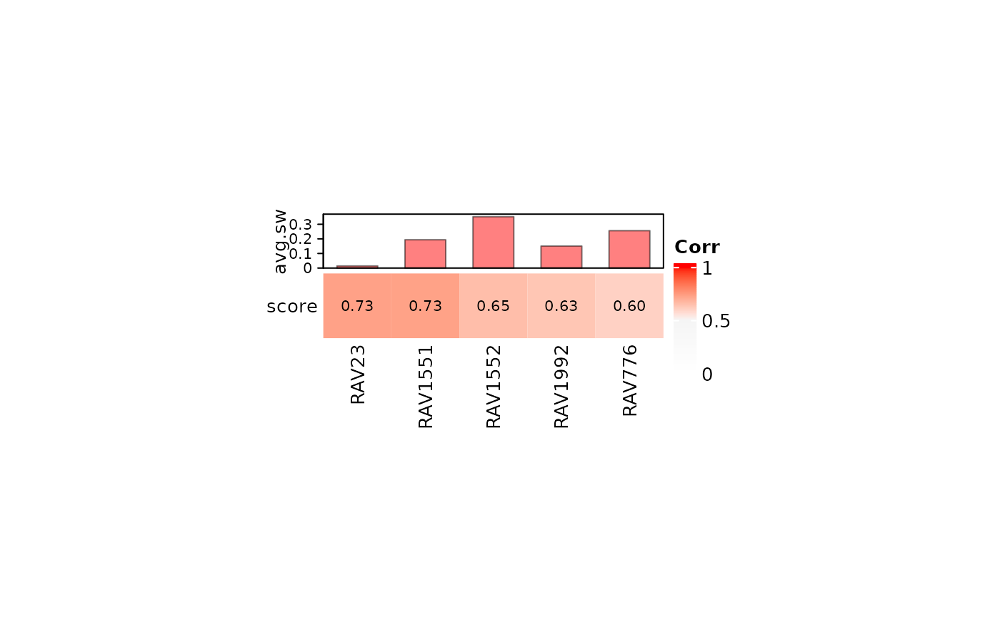
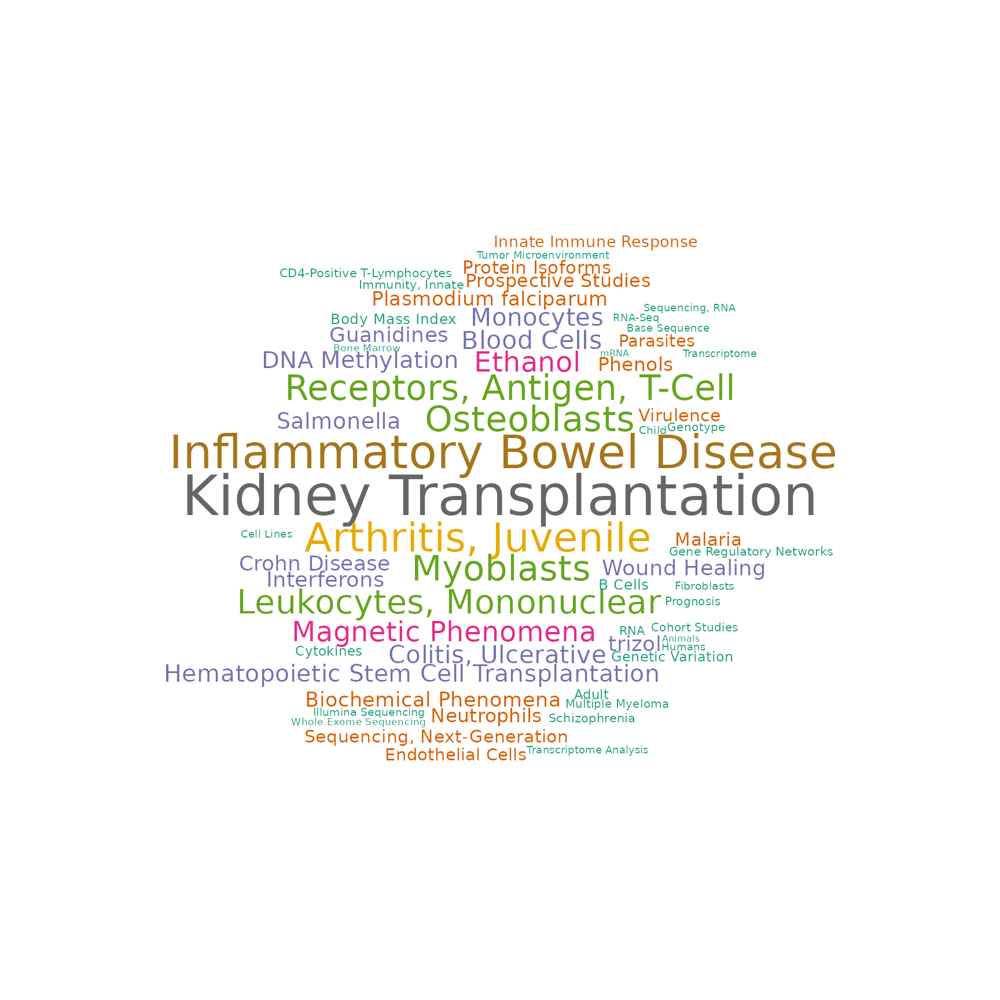

PCA on E-MTAB-2452
Sehyun Oh
March 16, 2022
Source:vignettes/E-MTAB-2452/E-MTAB-2452.Rmd
E-MTAB-2452.RmdAbstract
Source CodeSetup
One of the widely used exploratory data analysis methods is PCA and a PCA plot can provide a quick overview of sample composition and distribution. However, the interpretation of different PCs is not readily available in the conventional PCA. We couple PCs from new data with GSEA annotation of RAVmodel and enable the instant interpretation of PCA results. Here, we show this example using a microarray dataset from isolated immune cells (E-MTAB-2452) and RAVmodel annotated with three priors from the PLIER package (RAVmodel_PLIERpriors).
Load packages
suppressPackageStartupMessages({
library(dplyr)
library(GenomicSuperSignature)
library(EBImage)
})
#> Warning: package 'EBImage' was built under R version 4.1.3E-MTAB-2452
E-MTAB-2452 contains sorted peripheral blood cells (CD4+ T cells, CD14+ monocytes, CD16+ neutrophils) profiled on microarray from several autoimmune diseases.
The expression data of E-MTAB-2452 is pre-processed by Greene lab and available here.
annot.dat <- readr::read_tsv("data/E-MTAB-2452_hugene11st_SCANfast_with_GeneSymbol.pcl") %>% as.data.frame
rownames(annot.dat) <- annot.dat[, 2]
dataset <- as.matrix(annot.dat[, 3:ncol(annot.dat)])
rownames(dataset) <- annot.dat$GeneSymbol
dataset[1:3, 1:3]
#> CD14_triad0058_1.CEL CD14_triad0058_2.CEL CD14_triad0058_3.CEL
#> A1BG 1.154439e-01 0.17987252 0.17031624
#> NAT2 -7.464545e-06 -0.09915562 -0.02097987
#> ADA 5.338218e-01 0.67212096 0.76375038Each sample is labeled with the known cell type.
RAVmodel
Because E-MTAB-2452 data is comprised of isolated immune subsets and was analyzed in MultiPLIER paper with three priors implemented in PLIER method by default, we used the RAVmodel annotated with the same PLIER priors.
RAVmodel <- getModel("PLIERpriors", load=TRUE)
RAVmodel
#> class: PCAGenomicSignatures
#> dim: 13934 4764
#> metadata(8): cluster size ... version geneSets
#> assays(1): RAVindex
#> rownames(13934): CASKIN1 DDX3Y ... CTC-457E21.9 AC007966.1
#> rowData names(0):
#> colnames(4764): RAV1 RAV2 ... RAV4763 RAV4764
#> colData names(4): RAV studies silhouetteWidth gsea
#> trainingData(2): PCAsummary MeSH
#> trainingData names(536): DRP000987 SRP059172 ... SRP164913 SRP188526
version(RAVmodel)
#> [1] "1.1.1"Annotate top PCs
We checked the enriched pathways for top eight PCs of E-MTAB-2452 data. By default, RAVs with the validation score above 0.5 are returned from annotatePC function. Here, only PC1 and PC2 have the associated RAV under the default condition.
val_all <- validate(dataset, RAVmodel)
annotatePC(1:8, val_all, RAVmodel, n = 5, simplify = TRUE)
#> PC1.RAV23 PC2.RAV1552
#> 1 SVM T cells CD8 IRIS_Monocyte-Day0
#> 2 SVM T cells CD4 naive IRIS_DendriticCell-Control
#> 3 SVM T cells follicular helper DMAP_MONO2
#> 4 SVM T cells regulatory (Tregs) IRIS_Monocyte-Day7
#> 5 SVM T cells gamma delta SVM Monocytes
#> PC3.noAnnot PC4.noAnnot PC5.noAnnot
#> 1 No significant pathways No significant pathways No significant pathways
#> 2 No significant pathways No significant pathways No significant pathways
#> 3 No significant pathways No significant pathways No significant pathways
#> 4 No significant pathways No significant pathways No significant pathways
#> 5 No significant pathways No significant pathways No significant pathways
#> PC6.noAnnot PC7.noAnnot PC8.noAnnot
#> 1 No significant pathways No significant pathways No significant pathways
#> 2 No significant pathways No significant pathways No significant pathways
#> 3 No significant pathways No significant pathways No significant pathways
#> 4 No significant pathways No significant pathways No significant pathways
#> 5 No significant pathways No significant pathways No significant pathwaysWe lowered the validation score cutoff to 0 (scoreCutoff = 0) and the output returned with more enriched pathways. Top four PCs of E-MTAB-2452 data are associated with RAV23/ RAV1552/ RAV1387/ RAV2766.
annotatePC(1:8, val_all, RAVmodel, n = 5, simplify = TRUE, scoreCutoff = 0)
#> PC1.RAV23 PC2.RAV1552
#> 1 SVM T cells CD8 IRIS_Monocyte-Day0
#> 2 SVM T cells CD4 naive IRIS_DendriticCell-Control
#> 3 SVM T cells follicular helper DMAP_MONO2
#> 4 SVM T cells regulatory (Tregs) IRIS_Monocyte-Day7
#> 5 SVM T cells gamma delta SVM Monocytes
#> PC3.RAV1387 PC4.RAV684
#> 1 MIPS_55S_RIBOSOME_MITOCHONDRIAL REACTOME_CELL_CYCLE
#> 2 REACTOME_RESPIRATORY_ELECTRON_TRANSPORT_ATP_S... REACTOME_CELL_CYCLE_MITOTIC
#> 3 MIPS_39S_RIBOSOMAL_SUBUNIT_MITOCHONDRIAL <NA>
#> 4 REACTOME_TCA_CYCLE_AND_RESPIRATORY_ELECTRON_T... <NA>
#> 5 REACTOME_RESPIRATORY_ELECTRON_TRANSPORT <NA>
#> PC5.RAV338
#> 1 MIPS_PA700_20S_PA28_COMPLEX
#> 2 REACTOME_RESPIRATORY_ELECTRON_TRANSPORT
#> 3 REACTOME_RESPIRATORY_ELECTRON_TRANSPORT_ATP_S...
#> 4 MIPS_55S_RIBOSOME_MITOCHONDRIAL
#> 5 KEGG_PARKINSONS_DISEASE
#> PC6.RAV299 PC7.RAV21
#> 1 REACTOME_METABOLISM_OF_PROTEINS IRIS_Neutrophil-Resting
#> 2 REACTOME_METABOLISM_OF_RNA <NA>
#> 3 REACTOME_METABOLISM_OF_MRNA <NA>
#> 4 <NA> <NA>
#> 5 <NA> <NA>
#> PC8.RAV312
#> 1 REACTOME_CELL_CYCLE_MITOTIC
#> 2 REACTOME_MITOTIC_M_M_G1_PHASES
#> 3 REACTOME_DNA_REPLICATION
#> 4 REACTOME_CELL_CYCLE
#> 5 <NA>Annotated PCA plot
Pairs plot
To compare which PC separates the different cell types the best, we draw the pairs plot with the top four PCs.
Tried GGally::ggpairs…
Top three PCs seem to separate different cell types well. So we draw annotated PCA plot with the different pairs of the top three PCs below.
PC1 vs. PC2
plotAnnotatedPCA(dataset, RAVmodel, PCnum = c(1,2), val_all = val_all,
scoreCutoff = 0.3, color_by = cellType,
color_lab = "Cell Type", trimed_pathway_len = 45)PC1 vs. PC3
plotAnnotatedPCA(dataset, RAVmodel, PCnum = c(1,3), val_all = val_all,
scoreCutoff = 0.3, color_by = cellType,
color_lab = "Cell Type", trimed_pathway_len = 45)PC2 vs. PC3
plotAnnotatedPCA(dataset, RAVmodel, PCnum = c(2,3), val_all = val_all,
scoreCutoff = 0.3, color_by = cellType,
color_lab = "Cell Type", trimed_pathway_len = 45)
Explore knowledge graph
Validated RAVs
Among the RAVs associated with the top four PCs of E-MTAB-2452 data, two are validated with high score: RAV23 and RAV1552.
heatmapTable(val_all, RAVmodel)
Associated MeSH terms
drawWordcloud(RAVmodel, 23)
drawWordcloud(RAVmodel, 1552)
drawWordcloud(RAVmodel, 1387)
#> Warning in wordcloud::wordcloud(words = all$word, freq = all$freq, scale =
#> scale, : Antibodies, Monoclonal, Humanized could not be fit on page. It will not
#> be plotted.
Associated studies
findStudiesInCluster(RAVmodel, 23, studyTitle = TRUE)
#> studyName PC Variance explained (%)
#> 1 DRP001953 3 5.34
#> 2 ERP114104 2 3.40
#> 3 SRP051848 1 5.07
#> 4 SRP051848 2 3.49
#> 5 SRP059039 2 6.55
#> 6 SRP089814 1 22.78
#> 7 SRP110609 1 40.27
#> 8 SRP118733 5 2.98
#> 9 SRP132018 1 16.12
#> 10 SRP136057 1 18.44
#> 11 SRP136108 2 13.01
#> 12 SRP150419 1 23.86
#> 13 SRP150595 2 12.57
#> title
#> 1 Interactive Transcriptome Analysis of Malaria Patients and Infecting Plasmodium falciparum in Indonesia
#> 2 Altered Gene Expression in Antipsychotic Induced Weight Gain
#> 3 Gene Networks Specific for Innate Immunity Define Post-traumatic Stress Disorder [RNA-Seq]
#> 4 Gene Networks Specific for Innate Immunity Define Post-traumatic Stress Disorder [RNA-Seq]
#> 5 Elucidating the etiology and molecular pathogenicity of infectious diarrhea by high throughput RNA sequencing
#> 6 Differentially Expressed Gene Transcripts Using RNA Sequencing from the Blood of Immunosuppressed Kidney Allograft Recipients
#> 7 RNA-sequencing analysis of response to P.falciparum infection in Fulani and Mossi ethnic groups, Burkina Faso
#> 8 Transcriptomic analysis of Multiple Myeloma bone marrow microenvironment
#> 9 In-vitro stimulation of healthy donor blood with IL-3 cytokine
#> 10 Whole Blood Transcriptome Profiling in Juvenile Idiopathic Arthritis and Inflammatory Bowel Disease
#> 11 RNA-seq of nine primary human cell types exposed in vitro to methylprednisolone
#> 12 Haemopedia: Human Haematopoietic Gene Expression
#> 13 Homo sapiens Transcriptome or Gene expression
findStudiesInCluster(RAVmodel, 1552, studyTitle = TRUE)
#> studyName PC Variance explained (%)
#> 1 SRP051688 2 14.45
#> 2 SRP125125 4 4.49
#> 3 SRP150419 3 9.35
#> title
#> 1 A Cell-based Systems Biology Assessment of Human Blood to Monitor Immune Responses After Influenza Vaccination
#> 2 RNA-Seq profiling of 29 immune cell types and peripheral blood mononuclear cells
#> 3 Haemopedia: Human Haematopoietic Gene Expression
findStudiesInCluster(RAVmodel, 1387, studyTitle = TRUE)
#> studyName PC Variance explained (%)
#> 1 SRP047476 3 3.72
#> 2 SRP056840 2 8.53
#> 3 SRP078560 3 2.50
#> 4 SRP090298 1 16.56
#> 5 SRP093349 2 4.47
#> 6 SRP126417 2 5.23
#> 7 SRP126429 1 15.56
#> 8 SRP133442 2 13.81
#> 9 SRP136693 1 28.75
#> 10 SRP149794 8 1.62
#> 11 SRP151147 2 10.77
#> 12 SRP156583 2 11.03
#> 13 SRP158491 1 32.77
#> title
#> 1 Impact of regulatory variation from RNA to protein
#> 2 Renal systems biology of patients with systemic inflammatory response syndrome
#> 3 Transcriptomic profile of circulating memory T cells can differentiate between latent tuberculosis individuals and healthy controls
#> 4 Epigenome maps of time-resolved monocyte to macrophage differentiation and innate immune memory (RNA-Seq)
#> 5 Swarm intelligence-enhanced detection of non-small cell lung cancer using tumor-educated platelets
#> 6 RNA-sequencing and swarm intelligence-enhanced classification algorithm development for blood-based disease diagnostics using spliced blood platelet RNA
#> 7 Paired Heavy and Light Chain Immunoglobulin Reconstruction in Single-Cell RNA-Seq Data
#> 8 Distinct Transcriptomic and Exomic Abnormalities within Myelodysplastic Syndrome Marrow Cells
#> 9 Celll type specific gene expression from healthy human lung tissue infected with mycobacterium tuberculosis (ILC).
#> 10 Cell-specific proteome analyses of human bone marrow reveal molecular features of age-dependent functional decline [cell populations]
#> 11 Human bone marrow resident natural killer cells have a unique transcriptional profile and resemble resident memory CD8+ T cells
#> 12 Transcriptome profiles of B cell subsets from healthy and SLE subjects
#> 13 Gene expressions of T cells in each developmental stages in healthy volunteers and patients with rheumatoid arthritisManuscript Figures
Figure 1
Figure 1B top-left
x <- calculateScore(dataset, RAVmodel)
top_PC_annot <- c(23,1552,1387,684,338,299,21,312)
Fig1B_topleft <- sampleScoreHeatmap(x[,top_PC_annot],
dataName = "E-MTAB-2452",
modelName = "RAVs for top 8 PCs",
row_names_gp = 5, column_names_gp = 7,
cluster_columns = FALSE, cluster_row = FALSE)
Fig1B_topleft

Figure 1B bottom-right
Fig1B_bottomright <- plotAnnotatedPCA(dataset, RAVmodel, PCnum = c(2,3),
val_all = val_all, scoreCutoff = 0.3,
color_by = cellType,
color_lab = "Cell Type",
trimed_pathway_len = 45)
Fig1B_bottomright
Supplementary Figure 8
PCA result of leukocyte gene expression data (E-MTAB-2452) is displayed in A) a table or B) a scatter plot. PCA is done on a centered, but not scaled, input dataset by default. Different cutoff parameters for GSEA annotation, such as minimum validation score or NES, can be set.
supFig8 <- ggpubr::ggarrange(a14_ft, b, labels = c("A", "B"),
nrow = 2, heights = c(1.7, 5), align = "hv")
supFig8
Session Info
sessionInfo()
#> R version 4.1.2 (2021-11-01)
#> Platform: x86_64-pc-linux-gnu (64-bit)
#> Running under: Ubuntu 20.04.3 LTS
#>
#> Matrix products: default
#> BLAS/LAPACK: /usr/lib/x86_64-linux-gnu/openblas-pthread/libopenblasp-r0.3.8.so
#>
#> locale:
#> [1] LC_CTYPE=en_US.UTF-8 LC_NUMERIC=C
#> [3] LC_TIME=en_US.UTF-8 LC_COLLATE=en_US.UTF-8
#> [5] LC_MONETARY=en_US.UTF-8 LC_MESSAGES=en_US.UTF-8
#> [7] LC_PAPER=en_US.UTF-8 LC_NAME=C
#> [9] LC_ADDRESS=C LC_TELEPHONE=C
#> [11] LC_MEASUREMENT=en_US.UTF-8 LC_IDENTIFICATION=C
#>
#> attached base packages:
#> [1] stats4 stats graphics grDevices utils datasets methods
#> [8] base
#>
#> other attached packages:
#> [1] GGally_2.1.2 ggplot2_3.3.5
#> [3] tibble_3.1.6 EBImage_4.36.0
#> [5] GenomicSuperSignature_1.3.4 SummarizedExperiment_1.24.0
#> [7] Biobase_2.54.0 GenomicRanges_1.46.1
#> [9] GenomeInfoDb_1.30.1 IRanges_2.28.0
#> [11] S4Vectors_0.32.3 BiocGenerics_0.40.0
#> [13] MatrixGenerics_1.6.0 matrixStats_0.61.0
#> [15] dplyr_1.0.8 BiocStyle_2.22.0
#>
#> loaded via a namespace (and not attached):
#> [1] uuid_1.0-4 backports_1.4.1 circlize_0.4.14
#> [4] BiocFileCache_2.2.1 systemfonts_1.0.4 plyr_1.8.6
#> [7] digest_0.6.29 foreach_1.5.2 htmltools_0.5.2
#> [10] magick_2.7.3 tiff_0.1-11 fansi_1.0.2
#> [13] magrittr_2.0.2 memoise_2.0.1 cluster_2.1.2
#> [16] doParallel_1.0.17 tzdb_0.2.0 ComplexHeatmap_2.10.0
#> [19] readr_2.1.2 wordcloud_2.6 officer_0.4.1
#> [22] vroom_1.5.7 pkgdown_2.0.2 jpeg_0.1-9
#> [25] colorspace_2.0-3 blob_1.2.2 rappdirs_0.3.3
#> [28] textshaping_0.3.6 xfun_0.30 callr_3.7.0
#> [31] crayon_1.5.0 RCurl_1.98-1.6 jsonlite_1.8.0
#> [34] iterators_1.0.14 glue_1.6.2 gtable_0.3.0
#> [37] zlibbioc_1.40.0 XVector_0.34.0 webshot_0.5.2
#> [40] GetoptLong_1.0.5 DelayedArray_0.20.0 car_3.0-12
#> [43] shape_1.4.6 abind_1.4-5 scales_1.1.1
#> [46] DBI_1.1.2 rstatix_0.7.0 Rcpp_1.0.8.2
#> [49] clue_0.3-60 bit_4.0.4 htmlwidgets_1.5.4
#> [52] httr_1.4.2 RColorBrewer_1.1-2 ellipsis_0.3.2
#> [55] pkgconfig_2.0.3 reshape_0.8.8 farver_2.1.0
#> [58] sass_0.4.0 dbplyr_2.1.1 locfit_1.5-9.5
#> [61] utf8_1.2.2 tidyselect_1.1.2 labeling_0.4.2
#> [64] rlang_1.0.2 munsell_0.5.0 tools_4.1.2
#> [67] cachem_1.0.6 cli_3.2.0 generics_0.1.2
#> [70] RSQLite_2.2.10 broom_0.7.12 evaluate_0.15
#> [73] stringr_1.4.0 fastmap_1.1.0 fftwtools_0.9-11
#> [76] yaml_2.3.5 ragg_1.2.2 processx_3.5.2
#> [79] knitr_1.37 bit64_4.0.5 fs_1.5.2
#> [82] zip_2.2.0 purrr_0.3.4 xml2_1.3.3
#> [85] compiler_4.1.2 filelock_1.0.2 curl_4.3.2
#> [88] png_0.1-7 ggsignif_0.6.3 bslib_0.3.1
#> [91] stringi_1.7.6 ps_1.6.0 highr_0.9
#> [94] desc_1.4.1 gdtools_0.2.4 lattice_0.20-45
#> [97] Matrix_1.4-0 vctrs_0.3.8 pillar_1.7.0
#> [100] lifecycle_1.0.1 BiocManager_1.30.16 jquerylib_0.1.4
#> [103] GlobalOptions_0.1.2 cowplot_1.1.1 data.table_1.14.2
#> [106] bitops_1.0-7 flextable_0.7.0 R6_2.5.1
#> [109] bookdown_0.25 codetools_0.2-18 assertthat_0.2.1
#> [112] rprojroot_2.0.2 rjson_0.2.21 withr_2.5.0
#> [115] GenomeInfoDbData_1.2.7 parallel_4.1.2 hms_1.1.1
#> [118] grid_4.1.2 tidyr_1.2.0 rmarkdown_2.13
#> [121] carData_3.0-5 ggpubr_0.4.0 base64enc_0.1-3